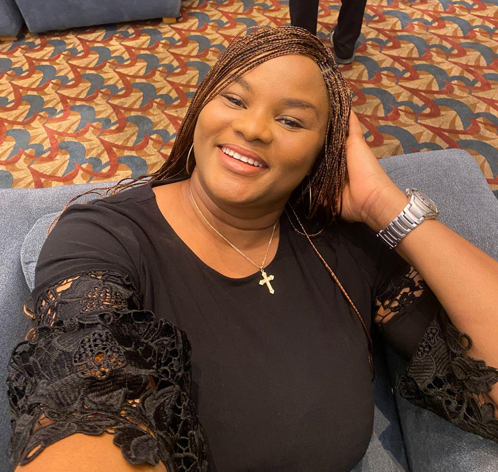
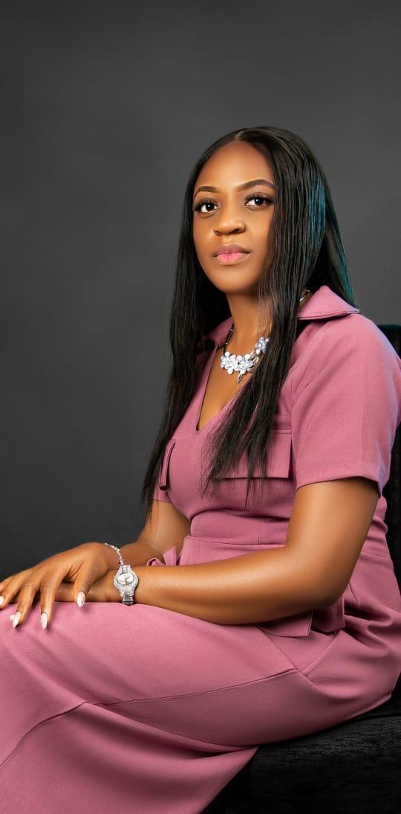
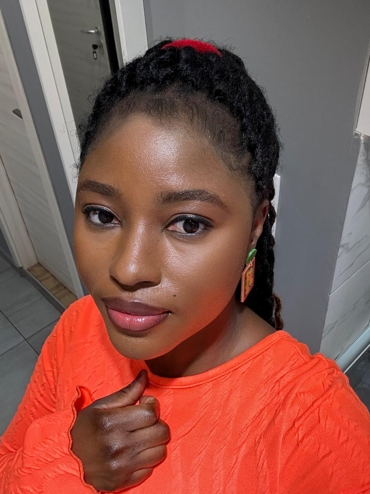
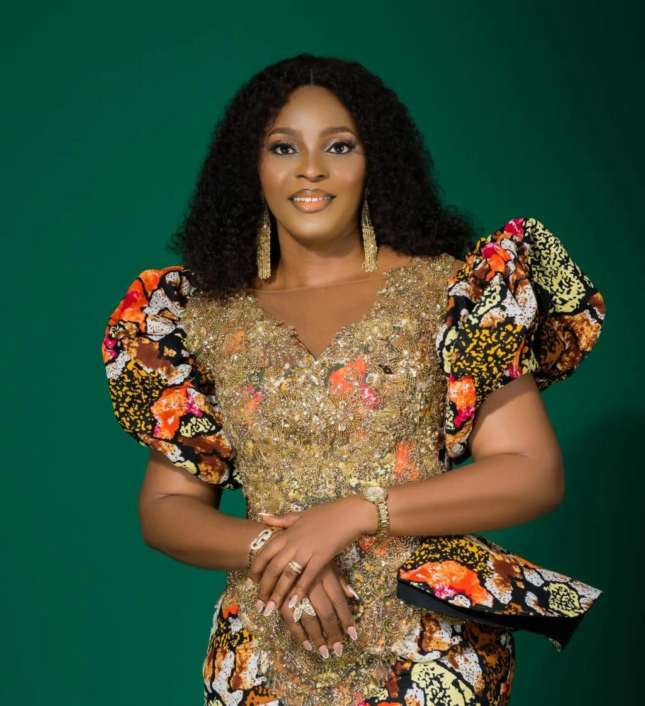
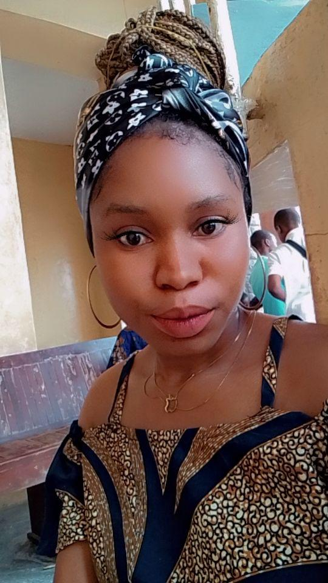
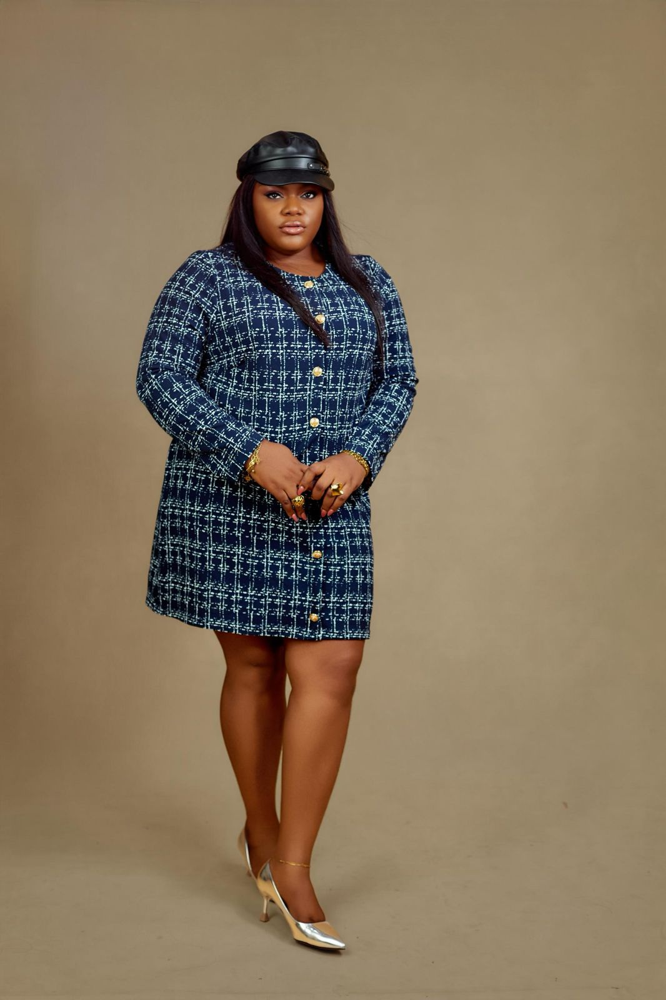
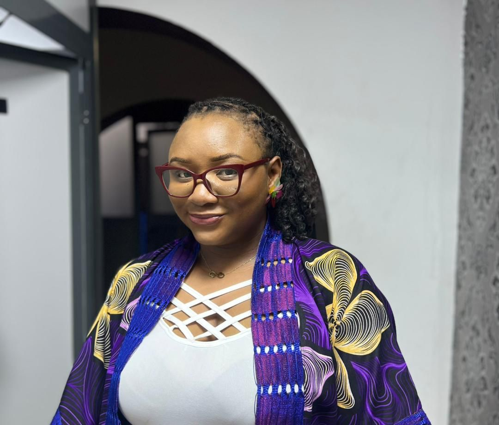

Mrs Kene Akaha
Lawyer practicing in Lagos and Abuja. Wife and mother of three lovely babies. Currently on official assignment in Abuja.
"For where two or three gather in my name, there am I with them." — Matthew 18:20

Lawyer practicing in Lagos and Abuja. Wife and mother of three lovely babies. Currently on official assignment in Abuja.

Hailing from Imo state, Ikeduru LGA. A dedicated member of our sisterhood united in faith and prayer.

From Edo state, Esan south East. Standing together in faith and unity with the Sisters in Christ.

Contributing her heart and soul to the Sisters in Christ. A pillar of strength and a testament to God's grace in our lives.

A vibrant member of our community, sharing the love of Christ and supporting our sisters through prayer and fellowship.

Musician and entrepreneur from Delta state (Oshimili north), based in Lagos. Bringing melody and faith to our community.

"I’m really excited to be part of this family. I pray that we continue to experience God’s tremendous blessings and overwhelming miracles in Jesus’ name. Amen"